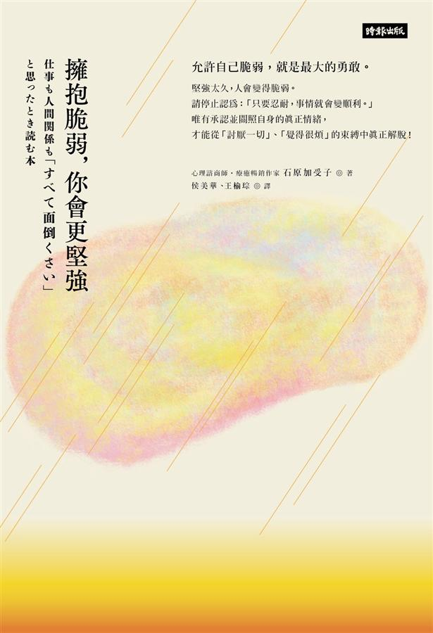

|  | 書名： 擁抱脆弱，你會更堅強 --- 簡介： 在面對負面情緒時，我們應該學習如何去接納，不該去逃避或否認。如何去察覺、接納、面對自我情緒是這本書想訴說的。擁抱並改變自己的想法，或許一切會不一樣。 --- 你發現心生病了嗎？ --- 作者： 石原加受子。為一名心理諮詢師，是提倡「忠於自我心理學」的「All Is One」心理諮商研究所負責人，同時也是日本學校諮商學會會員、日本心理衛生學會會員、日本 療癒紓壓協會前任理事、獲日本厚生勞動省認證之「創造健康與生活價值」顧問。 |
|
美好句子❤️： ✔️把問題從「我必須」變成「我想要」的角度來思考。 ✔️勇敢不是始終保持堅強，而是張開雙臂，迎向自己的脆弱。 ✔️以前為了保護自己，所以才盡力不去感受情緒。但是這麼做，真能自我保護嗎？ ✔️不再覺得痛苦，卻也失去感受快樂的能力。 ✔️不管飛沙走塵有多嚴重，還是有機會能天降甘霖，終於守得雲開見月明。總有一天，你會等到於水降臨，陽光從雲縫間灑落，藍天再度重現。 ✔️感謝別人，也能療癒自己。 ✔️戒掉「不能偷懶病」，將你心中「偷懶」的兩個字轉換為「休息」，允許自己喊「暫停」。 --- 📔📔 分為五個章節循序漸進的帶領讀者面對自我，利用各種微小的變化讓我們改變心態，獲得更多能量。 書中提及利用”想要……”取代”必須要…..”的思考方式，是非常棒的點子。很多時候被訓練到太過理性，使我們忽略了自我的情緒，但是若一件事情能找到為何我們想要 完成的原因，那麼比起一直監督自己必須完成，更能帶來動力。有時候，有些事我們辦不到，就會因此垂頭喪氣，覺得自己很沒用，但是其實沒有人是萬能的，適時和 他人求助能使我們走得更遠，又或是可以將”總有一天辦得到”的想法放在心中。 |
|